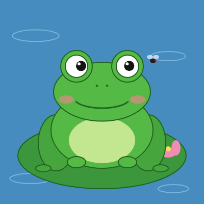
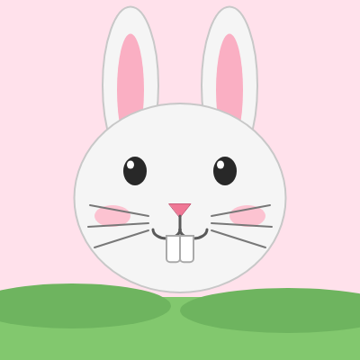
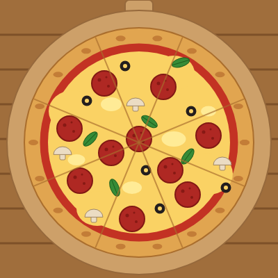

Práctica de Laboratorio: Composición Gráfica
Representación de objetos mediante primitivas 2D. Los dibujos desarrollados en el simulador de Khan Academy (ProcessingJS) se adaptaron a código web estándar con HTML, CSS, JavaScript y la librería p5.js.
Galería de dibujos

Rana
Una rana sobre un nenúfar que sigue con la mirada a una mosca.

Dientes de conejo
Un conejo cuyos dientes crecen según la posición del ratón.

¿Qué hay de cena?
Una pizza de pepperoni con champiñones, aceitunas y albahaca.
Día nevado soleado
Paisaje invernal con sol giratorio, nubes y nieve que cae.
Muñeco de nieve
Un muñeco de nieve que saluda en una noche estrellada.
Sección informativa
La etiqueta canvas y el contexto 2D
Qué es el lienzo de HTML5, cómo se obtiene su contexto de renderizado y cómo se dibuja con el API nativo de JavaScript.
Fundamentos de p5.js
Estructura de un sketch, primitivas, color, animación, interacción con el ratón y diferencias con Khan Academy.